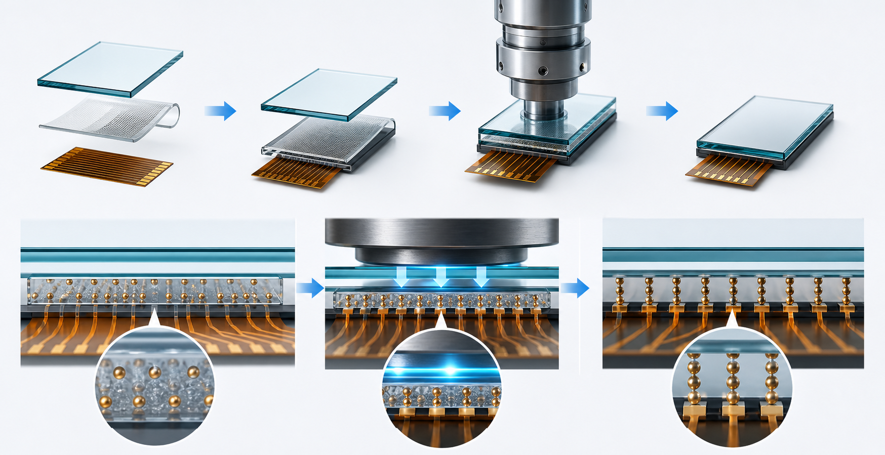

确认结构
FOG、COG、COF、COB、FOB，确认基材、电极和 pitch。
ACF materials for display bonding
美光之谷面向触控屏、显示模组和 FPC/COF 绑定现场，提供 Sony索尼（迪睿合dexerials）、Hitachi、Telephus ACF 导电胶，以及感压纸、硅胶皮、去除液、清洗剂和精密分切等制程配套能力。
Decision path
ACF 选型牵涉基材、电极 pitch、压接条件、储存期限、可靠性和返修方式。我们按材料类别、应用结构、工艺验证和现货交付组织服务，让客户更快获得可落地的型号建议。
FOG、COG、COF、COB、FOB，确认基材、电极和 pitch。
按品牌、型号、胶宽、卷长、储存条件和工艺窗口确认。
用感压纸、硅胶皮、清洗材料配合调机和返修。
常用型号先确认库存，再推进样品、批量和替代方案。
覆盖 CP、PAF 等系列，适用于中小型 FPD、触摸面板、相机模块、COF/OLED 绑定等精密连接。
查看详情常用 AC、MF 系列现货与型号匹配，适用于触摸屏 TP、GF/GFF、模组和多类绑定搭接。
查看详情提供 TOU、TSC、TCH、TCP、TGP 等系列，适用于细间距互连、COF、FPC 和塑料基材。
查看详情用于压接压力分布验证、热压缓冲、导热隔离和防静电保护，辅助产线快速排查工艺问题。
查看详情面向 TP、模组返工和 IC 固化 ACF 清洁，配套日立蓝胶等返修耗材。
查看详情精准分切索尼、日立、特来福思等品牌 ACF，极限精度可达 0.4mm*100m，快速稳定、良率高。
查看详情Technical support
提供 ACF 基础原理、预贴、本压、检测、保存、运输和返修注意事项，帮助工程、采购与生产现场快速判断型号适配和工艺风险。
了解使用方法
Ready to quote
联系 黄工，提供结构、型号、胶宽、卷长和应用场景，我们会尽快协助确认。